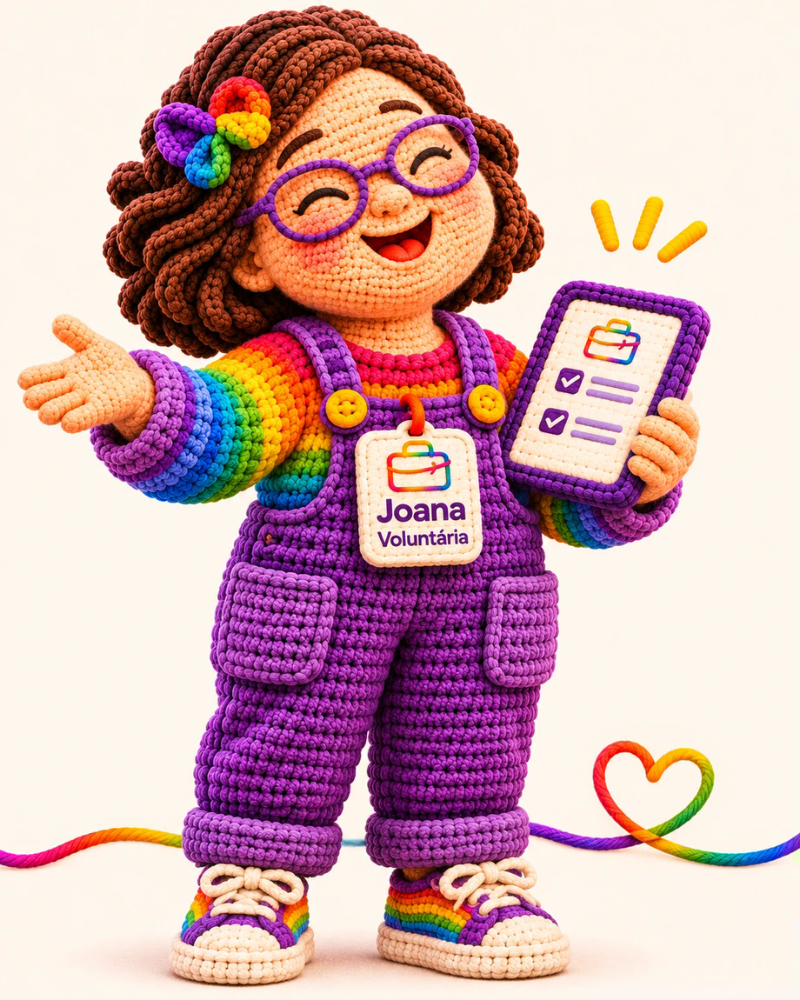
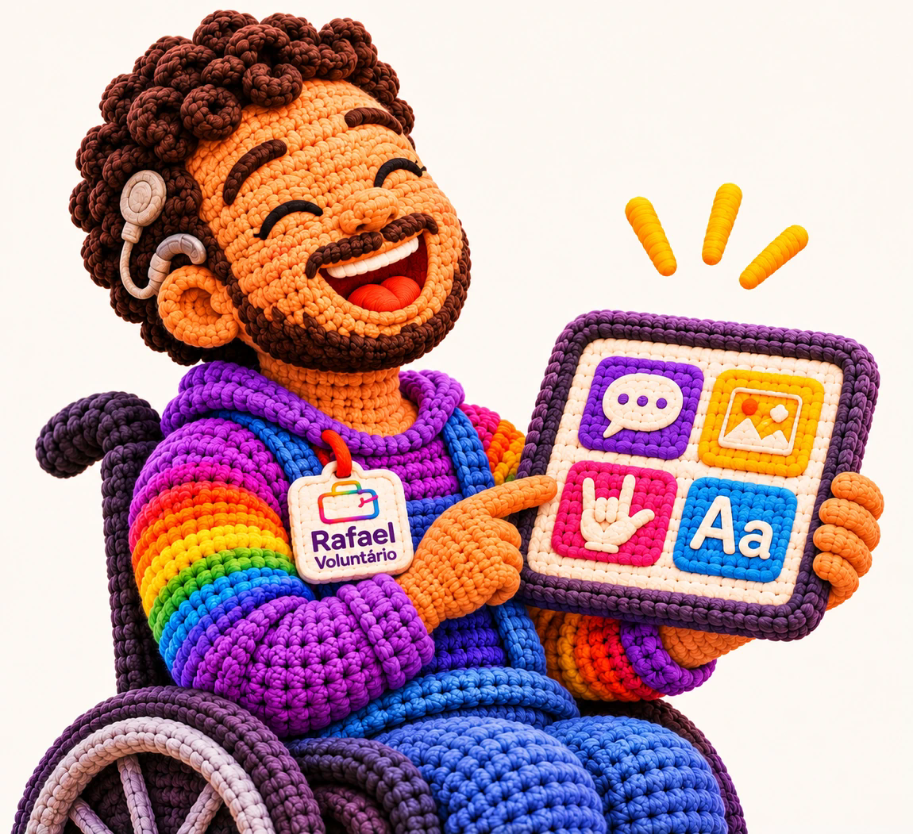
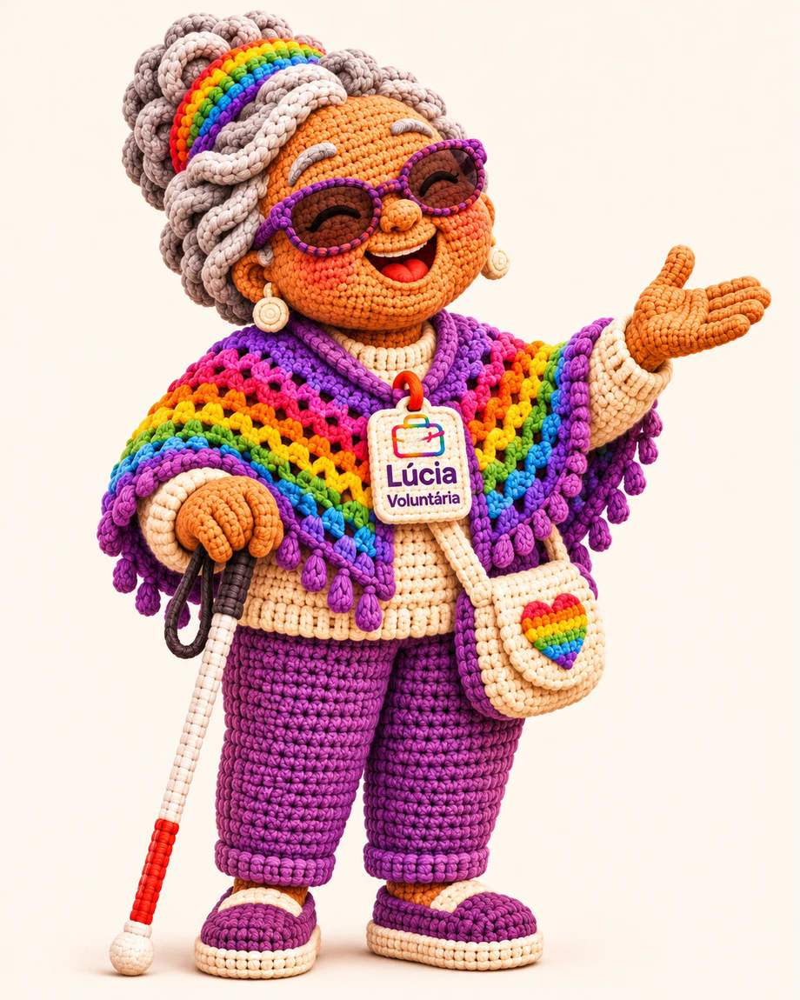
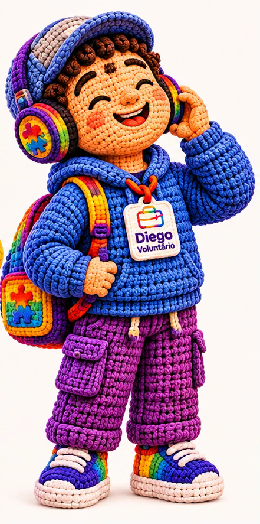
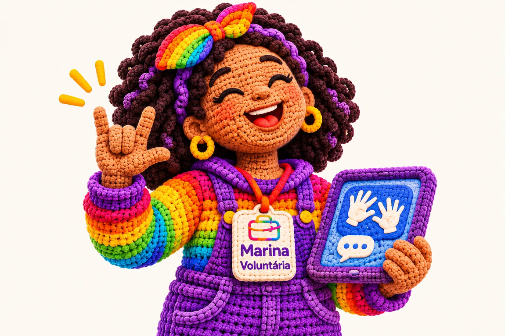

Trabalho com vida real
As rotinas são diferentes. As oportunidades precisam reconhecer essa diversidade.
Uma identidade que aproxima pessoas, empresas e oportunidades, reconhece o cuidado e valoriza tudo o que construímos em conjunto.

Houve um tempo em que muitos ofícios atravessavam gerações. Aprendia-se com mães, pais, vizinhos, mestres. Entre ferramentas e histórias, compartilhavam-se saberes e redes de apoio.
Hoje temos tecnologia para conectar o mundo inteiro. Ainda assim, muitas vezes transformamos pessoas em currículos, histórias em números e tempo em produtividade.
Se o cuidado sustenta o mundo, por que o mundo do trabalho insiste em ignorá-lo?
A Novelo nasce para fazer diferente. Para criar novos elos entre pessoas, empresas e oportunidades, reconhecendo que nossas vidas são diferentes, mas nossos caminhos se cruzam.
Conheça a origem do manifestoAs rotinas são diferentes. As oportunidades precisam reconhecer essa diversidade.
Competências, flexibilidade e respeito, além do currículo.
Oportunidades nascem das relações, não de expectativas isoladas.
Os fios multicoloridos representam trajetórias singulares que se cruzam. Texturas táteis, formas acolhedoras e uma linguagem visual humana.
Usar o arquivo oficial, sem redesenho ou alterações improvisadas.
Diversidade, acolhimento, confiança, movimento, oportunidade e equilíbrio.
Moderna, acessível e com personalidade, utilizada nos materiais do aplicativo.

Fibras visíveis e pontos de crochê. A textura faz parte da identidade.
Uma regra de identidade: nunca substituir o símbolo oficial por uma maletinha parecida nem trocar as artes em crochê por ilustrações planas.
Personagens já aprovados, mantidos com seus arquivos originais. Cada trajetória tem rosto, autonomia e lugar na história.

Presença, identidade e protagonismo
Arte aprovada
Comunicação e acessibilidade
Arte aprovada
Experiência e pertencimento
Arte aprovada
Diferenças que enriquecem
Arte aprovada
Acesso à comunicação
Arte aprovadaDo cadastro ao encontro com uma oportunidade: a experiência procura respeitar as necessidades de cada pessoa e valorizar suas competências.
Um lugar para conectar talentos, empresas e vida real.
Linguagem direta, sem exigir que a pessoa se encaixe num modelo único.
Preferências, competências, privacidade e escolha sobre compartilhamento.
Empresa verificada · Remoto
Modelo híbrido · Oportunidade
Oportunidades compatíveis e interesse compartilhado, respeitando a privacidade.
Uma experiência ainda em desenvolvimento. As telas acima demonstram conceitos e não substituem os mockups originais. O acervo completo de propostas será incorporado após curadoria e verificação individual.
Conhecer o aplicativoUma galeria pública de recursos com aprovação confirmada, identificados pelo nome e pela proveniência. Clique para ampliar sem abrir código SVG.
Carregando o acervo aprovado…
Uma marca cresce sem perder o que já foi aprovado. Guardamos a origem de cada personagem, a intenção das ilustrações e as decisões de revisão.
Entrar na curadoriaIncorporar somente a versão escolhida, mantendo os originais.
Excluir o arquivo selecionado apenas quando seguro e autorizado.
Registrar o comentário junto à arte e apresentar a próxima versão para avaliação.